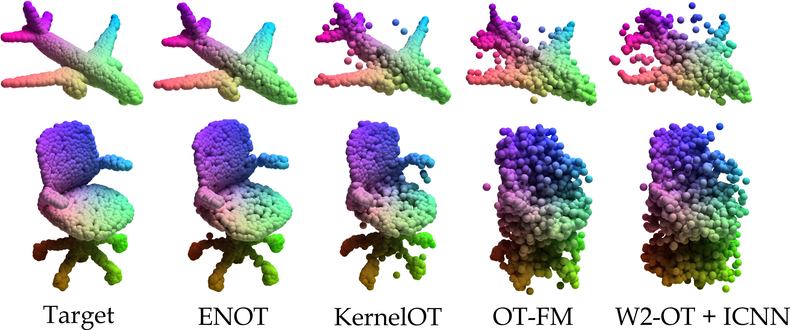
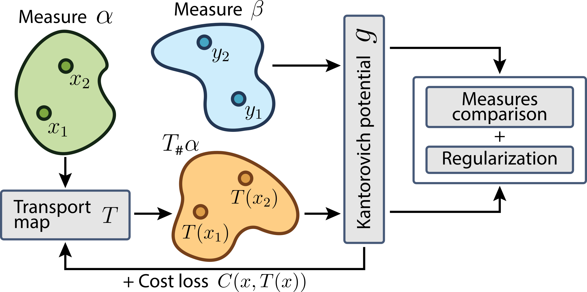
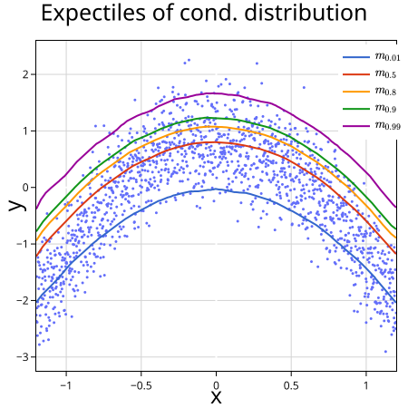
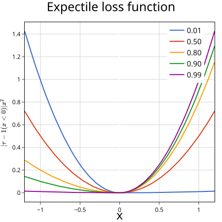
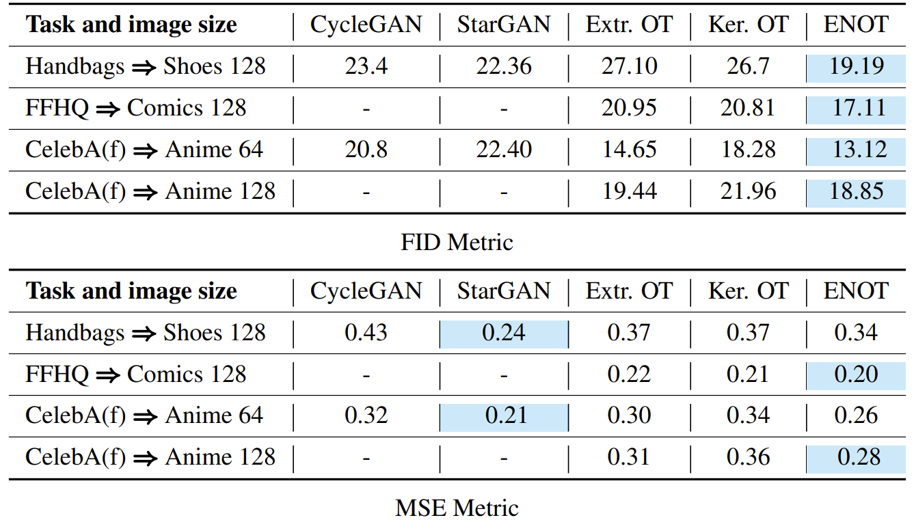
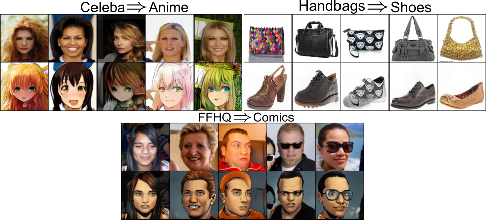

🦝ENOT :
Expectile Regularization for Fast and Accurate Training
of Neural Optimal
Transport
NeurIPS 2024 Spotlight
TL;DR
Expectile regularization on conjugate potential in the Neural Optimal Transport (NOT) optimization process enables ENOT to outperform existing NOT solvers and GANs in different generative tasks. ENOT is also up to 10 times faster and is integrated into OTT-JAX library.
Abstract
We present a new approach for Neural Optimal Transport (NOT) training procedure, capable of accurately and efficiently estimating optimal transportation plan via specific regularization on dual Kantorovich potentials. The main bottleneck of existing NOT solvers is associated with the procedure of finding a near-exact approximation of the conjugate operator (i.e., the c-transform), which is done either by optimizing over non-convex max-min objectives or by the computationally intensive fine-tuning of the initial approximated prediction. We resolve both issues by proposing a new theoretically justified loss in the form of expectile regularization which enforces binding conditions on the learning process of the dual potentials. Such a regularization provides the upper bound estimation over the distribution of possible conjugate potentials and makes the learning stable, completely eliminating the need for additional extensive fine-tuning. Proposed method, called Expectile-Regularized Neural Optimal Transport (ENOT), outperforms previous state-of-the-art approaches in the established Wasserstein-2 benchmark tasks by a large margin (up to a 3-fold improvement in quality and up to a 10-fold improvement in runtime). Moreover, we showcase performance of ENOT for various cost functions in different tasks, such as image generation, demonstrating generalizability and robustness of the proposed algorithm.
3D Generation Samples
\(T_{\#} \mu \)

- Examples of samples from the ShapeNet dataset generated by various approaches. Given the source distribution \(\mu\) (standard Gaussian), the goal is to pushforward \(T_{\#} \mu \) towards target by finding optimal transport plan \(T^{*}\).
- We compare ENOT with the following algorithms: Optimal Transport Flow-Matching (OT-CFM), W2-OT, Kernel OT
- ENOT provides the best sample quality amongst the baselines, while also being up to \(\times 3\text{-}10\) faster. Moreover, the number of iterations required to reach convergence is significantly smaller.
Target
ENOT (ours)
KernelOT
OT-FM
W2-OT
Method & Motivation

Primal optimal transport is formulated as a solution to the Monge problem (MP) between measures \(\alpha\) and \(\beta\) and stated as: $$ \begin{aligned} \text{MP}(\alpha, \beta) = \inf_{T : \, T_\#\alpha =\beta}\int _\mathcal{X} c(x, T(x))\text{d}\alpha(x), \end{aligned} $$ However, for computational reasons, it is easier to solve dual problem, called Kantorovich problem (KP): $$ \begin{aligned} \text{KP}(\alpha, \beta) = \sup_{(f, g) \in L_1(\alpha) \times L_1(\beta)} \Bigr[\mathbb{E}_{\alpha} [f(x)] + \mathbb{E}_{\beta} [g(y)]\Bigr] + \inf_{\pi, \gamma > 0} \gamma \, \mathbb{E}_{\pi} [c(x, y) - f(x) - g(y)], \end{aligned} $$ Which is equivalent to: $$ \begin{aligned} \text{KP}(\alpha, \beta) &= \sup_{g \in L_1(\beta)} \Bigr[\mathbb{E}_{\alpha} [g^c(x)] + \mathbb{E}_{\beta} [g (y)]\Bigr] \\ &= \sup_{g \in L_1(\beta)} \inf_{T: \, \mathcal{X} \to \mathcal{Y}} \Bigr[\mathbb{E}_{\alpha}[ c(x, T(x)) ] + \mathbb{E}_{\beta} [g (y)] - \mathbb{E}_{\alpha} [g(T(x)) ]\Bigr]. \end{aligned} $$ The main computational burden lies in inner optimization problem over conjugate functions. Existing approaches either try to find an exact solution (which is computationaly heavy) or find rough approximation (which leads to instabilities). We propose to restrict set of possible conjugate functions by adding expectile regularization term \(\mathcal{R}_g\): $$ \mathbb{E}_{\alpha} [g^T(x)] + \mathbb{E}_{\beta} [g (y)] - \mathbb{E}_{\alpha, \beta} [\mathcal{R}_g(x, y)]. $$ Despite its simplicity, overall objective has several useful properties:
- At each training step, approximated c-transform is not exact. However, at the end of training, it is exact.
- Obtained objective is simple and stable.
- There is no additional fine-tuning at each step, making whole procedure fast.
Expectile Regularization


Expectiles are another way to capture statistics of some random variable \(X\). More formally, expectile \(\tau \in (0, 1)\) of r.v \(X\) is a solution to the asymmetric least squares problem, defined as: $$ \begin{aligned} \arg \min _{m_{\tau}} \{\mathbb{E}\left[\mathcal{L}^{\tau}_2 (x - m_{\tau})\right]\} \\ \mathcal{L}^{\tau}_2 (u) = |\tau - \mathbb{1}(u < 0)|u^2 \end{aligned} $$ Intuitively, for low-valued expectiles, the model is penalized more for underestimation, while for large expectile values, we penalize for the overestimation, as shown in the graph above. By penalizing the overly optimistic approximation of the conjugate Kantorovich potential during the optimization, expectile regularization enforces "closeness" between the true conjugate and that approximated by a neural network.
Experiments (Image-to-Image)

- Comparison of ENOT to baseline methods for Image-to-Image translation. We compare ENOT against 1) GAN based approaches: CycleGAN and StarGAN and 2) Recent Neural OT approaches: ExtremalOT and KernelOT. We compare generated images based on Fréchet Inception Distance (FID) and Mean Squared Error (MSE). Empty cells indicate that the authors of a particular method did not include the results in those tasks.

- Image sizes are 128x128, the 1st row contains the source images, the 2nd row contains predicted generative mapping by ENOT; Cost function: \(\mathcal{L}^2\) divided by the image size.
Paper
Citation
@inproceedings{
buzun2024expectile,
title={Expectile Regularization for Fast and Accurate Training of Neural Optimal Transport},
author={Nazar Buzun and Maksim Bobrin and Dmitry V. Dylov},
booktitle={The Thirty-eighth Annual Conference on Neural Information Processing Systems},
year={2024},
url={https://openreview.net/forum?id=4DA5vaPHFb}
}
The website template was borrowed from Michaël Gharbi and Jon Barron.